Illusion of Underwater (Español)
Quest Principal
| Requisitos | |
|---|---|
| Nivel Base: | 140 |
| Lugar de Inicio: | |
| Recompensas | |
| Experiencia: | 222,093,000 (Base) y 155,465,000 (Job). |
| Items: | Permite la creación de equipo Illusion |
- La quest inicia en Izlude, en . Puedes llegar rápidamente usando el Warper > Illusion Dungeons > Illusion of Underwater.
- Habla con Gein. Te dirá que ha encontrado al caña de pescar de Sirud. Tendrás que hablar con Jerry.
- 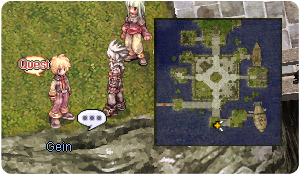
- Ve a la librería Este de Prontera y entra al edificio. Una vez dentro, ve a la esquina superior izquierda de la librería y habla con Jerry .
- Vuelve a Izlude y habla nuevamente con Gein. Te entregará un
 Abyssal Essence.
Abyssal Essence. - Ve nuevamente a la librería de Prontera y habla con Jerry, en la misma ubicación que en el paso 3.
- Regresa a Izlude y cuando te acerques a , Jerry aparecerá ahí.
- Habla con Jerry y el te transportará dentro del dungeon.
Ahora tienes acceso a ambos niveles del dungeon. Puedes hablar con Gatekeeper para ir al Segundo nivel, con monstruos de nivel 180+. - Habla con Sirud junto a la entrada.
- 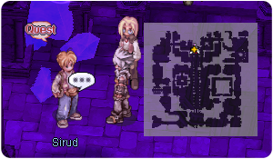
- Habla con Jerry junto a ti. Te pedirá cazar los siguientes monstruos (todos se encuentran en el mismo piso en el que estás). También puedes comenzar a recolectar Abyssal Essence mientras matas en el dungeon, ya que los necesitarás para el siguiente paso.
- 10 Deep Sea Sropho
- 10 Deep Sea Deviace
- 10 Deep Sea Marse
- Una vez los hayas derrotado, regresa con Jerry y habla con el nuevamente. Te recompensará con 2
 Illusion Stones y algo de experiencia.
Illusion Stones y algo de experiencia. - Ahora te pedirá que reúnas 10 Abyssal Essence, que son drop de cualquiera de los monstruos del dungeon.
- Regresa con el cuando hayas reunido los suficientes y el te regresará a la superficie. También te entregará 2 Illusion Stones y algo de experiencia.
Has desbloqueado todas las Quest Diarias!
Puedes hablar con Jerry para entrar a Illusion of Underwater. Si no aparece, tendrás que caminar cerca de el, de forma similar al paso 6.


Quest Diarias
Abyssal Essence Collection
| Requisitos | |
|---|---|
| Nivel Base: | 140 |
| Lugar de Inicio: | |
| Recompensas | |
| Experiencia: | 111,046,500 (Base) y 77,732,500 (Job). |
| Items: | 3 Illusion Stones
|
- Necesitas recolectar 10 Abyssal Essences de cualquiera de las criaturas del dungeon.
- Regresa con Jerry en la entrada del dungeon. Serás recompensado con 3 Illusion Stones y algo de experiencia.
Deep Sea Creatures Control
| Requisitos | |
|---|---|
| Nivel Base: | 140 |
| Lugar de Inicio: | |
| Recompensas | |
| Experiencia: | 111,046,500 (Base) y 77,732,500 (Job). |
| Items: | 3 Illusion Stones
|
- Necesitas cazar 10 Deep Sea Sropho, 10 Deep Sea Deviace y 10 Deep Sea Marse.
- Regresa con Jerry en la entrada del dungeon. Serás recompensado con 3 Illusion Stones y algo de experiencia.
Deep Sea Creatures Control (Piso 2)
| Requisitos | |
|---|---|
| Nivel Base: | 180 |
| Lugar de Inicio: | |
| Recompensas | |
| Experiencia: | 502,687,500 (Base) y 351,881,250 (Job). |
| Items: | 4 Illusion Stones
|
- Necesitas cazar 10 Deep Sea Swordfish, 10 Deep Sea Phen y 10 Deep Sea King Dramoh.
- Regresa con Jerry en la entrada del dungeon. Serás recompensado con 4 Illusion Stones y algo de experiencia.
Deep Sea Creatures Control (Piso 2)
| Requisitos | |
|---|---|
| Nivel Base: | 180 |
| Lugar de Inicio: | |
| Recompensas | |
| Experiencia: | 502,687,500 (Base) y 351,881,250 (Job). |
| Items: | 4 Illusion Stones
|
- Necesitas cazar 15 Deep Sea Sedora y 15 Deep Sea Strouf.
- Regresa con Jerry en la entrada del dungeon. Serás recompensado con 4 Illusion Stones y algo de experiencia.
Daily Quest Reset
Como mecánica exclusiva de NovaRO, puedes reiniciar los cooldowns de tus daily quests.
Esto significa que eres capaz de farmear cuantas Illusion Stones quieras con un único personaje, sin necesidad de crear personajes adicionales para evitar los cooldowns de las quests.
Para reiniciarlos, habla con Osmundi. Puedes encontrarlo dentro de cada Illusion Dungeon en las siguientes ubicaciones:
- Illusion of Moonlight .
- Illusion of Vampire .
- Illusion of Frozen .
- Illusion of Abyss .
- Illusion of Teddy Bear .
- Illusion of Luanda .
- Illusion of Labyrinth .
- Illusion of Underwater .
Los reinicios se separan en 3 categorías distintas acorde al grupo de dificultad en que cada dungeon se encuentra. Cada reset te recompensará con una cantidad determinada de Illusion Stones:
- Categoría 1: Illusion of Moonlight, Illusion of Vampire e Illusion of Frozen.
- Recompensa al resetear: 12 Illusion Stone
- Recompensa al resetear: 12
- Categoría 2: Illusion of Abyss, Illusion of Teddy Bear e Illusion of Underwater - Primer Piso.
- Recompensa al resetear: 18 Illusion Stone
- Recompensa al resetear: 18
- Categoría 3: Illusion of Luanda, Illusion of Labyrinth e Illusion of Underwater - Segundo Piso.
- Recompensa al resetear: 24 Illusion Stone
- Recompensa al resetear: 24
El primer reinicio del día, para cada grupo, te otorgará 6 Illusion Stone adicionales.
Una vez completes las dailies de cualquiera de las categorías de arriba, puedes reiniciar las daily quest de dicha categoría. Tras reiniciarlas, las quests no volverán a dar mas experiencia hasta que haya transcurrido el tiempo para su reinicio normal.
Cada categoría puede ser completada y reiniciada por separado, pero no puedes reiniciar las dailies de un Illusion Dungeon en particular sin haber completado las otras dailies de su respectiva categoría.
MVP Spawn
Para invocar al MvP del Primer piso, Deep Sea Kraken, deben eliminarse 2000 mobs en este piso del dungeon. Habrá un anuncio en el mapa en cuanto aparezca.
Para invocar al MvP del Segundo piso, Deep Sea Witch, deben eliminarse 2000 mobs en este piso del dungeon. Habrá un anuncio en el mapa en cuanto aparezca.
Equipo

Habla con Horen en la entrada de Illusion of Underwater.
Puedes encontrar mas información sobre los encantos Illusion en esta página.
| Imagen | Nombre | Descripción | Creación |
|---|---|---|---|
| 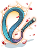 | Illusion Electric Eel [2] |
MATK +180
ATK +30
MATK +40
Ataque: 170 Peso: 180 Nivel de Arma: 4 Nivel Mínimo: 120 Equipable por: Wanderer |
|

|
Illusion Electric Guitar [2] |
MATK +180
ATK +30
MATK +40
Ataque: 170 Peso: 180 Nivel de Arma: 4 Nivel Mínimo: 120 Equipable por: Minstrel |
|
| 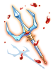 |  Illusion Brionac [2] Illusion Brionac [2]
|
ATK +10%
ATK +5%.
Ataque: 210 Peso: 300 Nivel de Arma: 4 Nivel Mínimo: 120 Equipable por: Swordsman classes. |
|

|
 Illusion Katar of Frozen Icicle [2] Illusion Katar of Frozen Icicle [2]
|
ATK +5 por cada nivel de refine.
ATK +5%.
Ataque: 220 Peso: 120 Nivel de Arma: 4 Nivel Mínimo: 120 Equipable por: Assassin classes. |
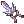 +7 Katar of Frozen Icicle [3]
|
| 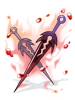 |  Illusion Death Guidance [2] Illusion Death Guidance [2]
|
ATK + 4 per refine rate. ATK +30.
Ataque: 240 Peso: 200 Nivel de Arma: 4 Nivel Mínimo: 120 Equipable por: Swordsman classes. |
|

|
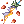 Illusion Zephyrus [3] |
ATK +4 por cada nivel de refine. ATK +30.
Ataque: 250 Peso: 330 Nivel de Arma: 4 Nivel Mínimo: 120 Equipable por: Swordsman classes. |
|

|
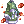 Illusion Saint Robe [1] |
Max HP +10%, Max SP +10%.
ATK +30.
Defensa : 60 Peso : 60 Nivel Mínimo : 120 Equipable por : Acolyte classes, Merchant classes. |
|
| 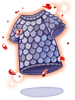 |  Illusion Saphien's Armor of Ocean [1] Illusion Saphien's Armor of Ocean [1]
|
Max HP +10%.
Tipo de Equipo : Armor Defensa : 50 Peso : 220 Nivel Mínimo : 120 Equipable por : Swordsman classes, Merchant classes. |
|
| 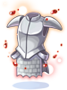 |  Illusion Chain Mail [1] Illusion Chain Mail [1]
|
Max HP +10%, Max SP +10%.
ATK +5%.
Defensa : 70 Peso : 330 Nivel Mínimo : 120 Equipable por : Swordsman classes, Merchant classes, Thief classes. |
|

|
 Illusion Morrigane's Helm [1] Illusion Morrigane's Helm [1]
|
Str +5, Cri +5.
Str +5, ATK +10%, Cri +5
Defensa : 15 Espacio : Upper Peso : 50 Nivel Mínimo : 130 Equipable por : All except Novice. |
|
| 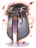 |  Illusion Morrigane's Manteau [1] Illusion Morrigane's Manteau [1]
|
Luk +5, Flee +20.
Defensa : 12 Peso : 60 Nivel Mínimo : 130 Equipable por : All except Novice. |
|

|
 Illusion Morrigane's Belt [1] Illusion Morrigane's Belt [1]
|
Str +3, Max HP +5%.
Incrementa la velocidad de ataque (reduce el delay after attack un 10%).
Defensa : 0 Peso : 20 Nivel Mínimo : 130 Equipable por : All except Novice. |
|

|
Illusion Morrigane's Pendant [1] |
ATK +20, Cri +5. ATK +10%.
Defensa : 0 Peso : 20 Nivel Mínimo : 130 Equipable por : All except Novice. |
|


 +7
+7  +7
+7 
 +7
+7  150
150 

 150
150  +7
+7  150
150 
 +7
+7  150
150 
 +7
+7  +7
+7  +7
+7  +7
+7  +7
+7 
 15
15  15
15
Mob
Primer Piso
| Imagen | Monstruo | Nivel | HP | Tamaño / Raza / Elemento |
|---|---|---|---|---|

|
Deep Sea Sropho | 147 | 336,823 | Medium / Fish / Water 3 |

|
Deep Sea Obeaune | 149 | 340,238 | Medium / Fish / Water 2 |

|
Deep Sea Deviace | 150 | 348,355 | Medium / Fish / Water 4 |

|
Deep Sea Marse | 149 | 335,141 | Small / Fish / Water 2 |
| 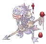 | Deep Sea Merman | 148 | 337,534 | Medium / Fish / Water 3 |
| 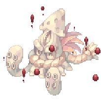 | 
|
204 | 14,342,360 | Large / Fish / Water 4 |
Segundo Piso
Este mapa contiene monstruos que tienen drop considerado squad drops:
- Los Monstruos mostrarán estos items cuando uses @mi con la información acorde al tamaño de la party y sus respectivos rates.
- El drop rate se reduce si el tamaño de la party supera los 2 miembros.
- Un jugador con mas de una cuenta en la misma party verá reducido su drop rate.
- Ejemplo: 1 jugador con 2 cuentas en la misma party solo tendrá un 50% del drop mostrado en @mi para cada personaje.
- No todos los drops de un monstruo son afectados por esto, tendrás que revisarlos uno por uno.
- Los Items son dropeados individualmente para cada miembro de la party.
- Cualquier tipo de Bubble gum no afectará el drop rate de estos items.
- En este mapa los items afectados son: Abyssal Essence
| Imagen | Monstruo | Nivel | HP | Tamaño / Raza / Elemento |
|---|---|---|---|---|

|
Deep Sea Sedora | 199 | 2,875,143 | Medium / Fish / Wind 3 |

|
Deep Sea Swordfish | 199 | 2,997,411 | Large / Fish / Water 3 |
| 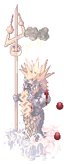 | Deep Sea Strouf | 201 | 2,967,419 | Large / Fish / Water 3 |

|
Deep Sea Phen | 199 | 2,897,158 | Medium / Fish / Water 2 |

|
Deep Sea King Dramoh | 205 | 3,115,698 | Large / Fish / Water 3 |

|
|
205 | 75,746,433 | Large / Demon / Dark 3 |
Cartas
| Carta | Va en: | Efecto |
|---|---|---|
 Deep Sea Sropho Card Deep Sea Sropho Card
|
Arma |
Incrementa el daño mágico de propiedad Wind un 3%. |
 Deep Sea Obeaune Card Deep Sea Obeaune Card
|
Accesorio |
MATK +30 Incrementa el daño mágico contra enemigos de propiedad Water un 15%. |
 Deep Sea Deviace Card Deep Sea Deviace Card
|
Arma |
Incrementa el daño físico contra enemigos de propiedad Water y de raza Fish un 5%. |
 Deep Sea Marse Card Deep Sea Marse Card
|
Escudo |
Reduce el daño físico y mágico recibido de enemigos de propiedad Earth un 15%. |
 Deep Sea Merman Card Deep Sea Merman Card
|
Botas |
ATK +4 cada 15 puntos base de STR. Incrementa el daño crítico un 15%. |
 Deep Sea Sedora Card Deep Sea Sedora Card
|
Arma |
Incrementa las probabilidad de acertar un ataque crítico contra monstruos de raza Fish un 30%.
Incrementa el daño crítico un 15%. |
 Deep Sea Swordfish Card Deep Sea Swordfish Card
|
Headgear |
Reduce el daño recibido de propiedad Water un 10%.
MATK +3%. |
 Deep Sea Strouf Card Deep Sea Strouf Card
|
Armadura |
Max HP +10%, Max SP +5%. ATK +30. MATK +30. |
 Deep Sea Phen Card Deep Sea Phen Card
|
Garment |
Reduce el daño recibido de propiedad Neutral un 15%. Reduce el daño recibido de propiedad Neutral un 5% adicional. |
 Deep Sea King Dramoh Card Deep Sea King Dramoh Card
|
Headgear |
Max HP -5%.
STR +4, Max HP +15%. |
 Deep Sea Kraken Card Deep Sea Kraken Card
|
Arma |
Incrementa el daño físico de rango en un 25%. |
 Deep Sea Witch Card Deep Sea Witch Card
|
Garment |
Incrementa el daño mágico de propiedad Fire y Shadow un 100%. |